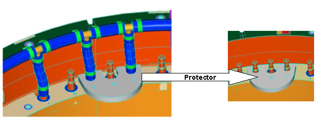
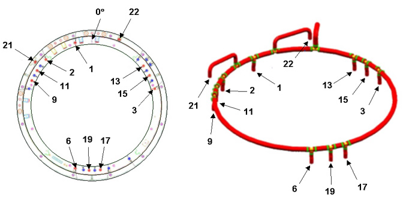
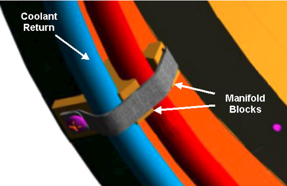
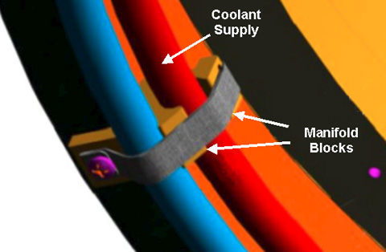

Operating Documentation
Direction 5670006, Rev# 1
Discovery MR750w GEM Service Methods
Module Version 4.0, Version Date 11/25/09
Operating Documentation |
| Required Persons | Preliminary Reqs | Procedure | Finalization |
|---|---|---|---|
| 1 | - | 8 Hours | - |
| Item | Qty | Effectivity | Part# | Manufacturer | |
|---|---|---|---|---|---|
| Floor Sign, Warning: Authorized Personnel Only | 1 | - | Included in Safety Signage Kit 46-258770G4 | - | |
| Coolant Removal Kit (part of HEC) | 1 | - | 5269683 | - | |
| Non-Magnetic Tools Kit | 1 | - | 5112581 | - | |
| 5 Gallon Pail | 1 | - | 2239133 | - | |
| Nitrile Gloves | 1 | - | 46-194427P400 | - | |
| Safety Glasses (one pair per person) | 1 | - | - | - | |
| Item | Qty | Effectivity | Part# | Manufacturer |
|---|---|---|---|---|
| Coolant Fluid (1 Gallon Container) (See Required Conditions) | 15 | - | 5174313 | - |
| Coolant Fluid (5 Gallon Container) (See Required Conditions) | 3 | - | 5174313-2 | - |
| Coolant Manifold Replacement Kit | 1 | - | See FRU Manual | - |
| Item | Qty | Effectivity | Part# | Manufacturer | |
|---|---|---|---|---|---|
| XRMW Manifold | 1 | - | - | - | |
| ||||
| Strong magnetic field! | ||||
| ferrous material can become dangerous projectiles in the presence of the magnetic field. | ||||
| do not bring any ferromagnetic tools or equipment into the magnet room. |
| ||||
| Electrical shock hazard! | ||||
| Contact with connectors leading to an energized power supply can cause electrical shock. Follow the lockout/tagout procedures while performing services to the electrical connection components. | ||||
| Coolant circulating through the gradient coil is in contact with live electrical conductors. Using the wrong type of coolant may result in electrical shock. Always use coolant specified by DVw gradient coil service procedure. |
| ||||
| High water pressure! | ||||
| Coolant is circulating through the gradient coil. | ||||
| Follow the lockout/tagout procedures while performing services to the coolant circulation lines. |
| Condition | Reference | Effectivity |
|---|---|---|
Approximately 4 gallons of coolant fluid is needed for each manifold replacement. FEs will decide which type of container to order. | - | - |
Power to the PGR Cabinet is turned off and the LOTO procedures are implemented. | - | - |
Coolant circulation pump is turned off and LOTO procedures are implemented. | - | - |
| NOTE: | Nitrile Gloves must be worn when performing coolant removal. |
| NOTE: | Follow customers procedure for proper disposal of coolant. |
Remove the patient bridge. (See Bridge and Longitudinal Drive Belt Replacement.)
Remove magnet rear end bell. Refer to the Rear End Bell Removal and Install procedure.
Turn off the pumps at the Heat Exchange Cabinet (HEC) by pressing the corresponding key sequence for the blowers, gradient coil, and power electronics drives. (See Table 1.)
| NOTE: | Do not remove power from the VFDs (Variable Frequency Drive without first powering down using the key sequences shown in Table 1. Failure to follow this power-down process may result in premature VFD failure. |
Table 1: HEC Control Panel Key Sequence
| Part | Key Sequence |
| Blowers | ▲ F1 |
| Gradient Coil (GC) | ▲ F2 |
| Power Electronics (PE) | ▲ F3 |
Press and hold ▲ while selecting the F-number key.
Perform the LOTO for Heat Exchanger Cabinet (HEC)
Perform the LOTO for the PGR PDU/Gradient Subsystem.
Turn off both PVC valves in coolant supply and return lines at the service end of XRMW coil.
Place an empty five gallon bucket close to the magnet service-end to accept discharge coolant. (See Illustration 1.)
Illustration 1: Draining Manifold Supply

Carefully disconnect manifold supply and return lines (one at a time) from the barbed connections below the closed valves. Direct one line (either supply or return line) towards the reservoir and empty as much coolant as possible into the reservoir. (See Illustration 1.)
Obtain a one inch barbed fitting from the Coolant Removal Kit and attach it to the other line. Connect the pump-to-mainfold adapter to the other line through the barbed fitting. (See Illustration 1.)
Attach the manual pump from the Coolant Removal Kit to the other end of the adapter (if not attached already).
Start pumping air while observing coolant discharge.
Continue pumping until no more coolant comes out. This should take approximately 10 to 15 minutes.
With the magnet rear end-bell and the rear pedestal removed, the XRMW manifolds are accessible.
Ensure that both PVC valves in coolant supply and return lines at the XRMW service-end are turned off and coolant has been purged from the XRMW coil.
Remove the eight black anchor Velcro straps that are securing the manifolds to the XRMW coil. (See Illustration 2.)
Illustration 2: Velcro Strap

| NOTE: | A non-magnetic side cutter is required to cut heat shrink. |
Using a non-magnet knife, carefully cut open the heat shrinks at the manifold-to-inner coil connections making sure not to cut the temperature sensor and wire when removing the heat shrink. (See Illustration 3.)
Illustration 3: Removing Heat Shrink

| ||||
| Some manifold-to-coil connections have temperature sensors attached. Watch closely when cutting heat shrinks and avoid damaging the temperature sensors or wires. | ||||
The stainless steel hose clamp will be exposed once the heat shrink is removed. If this is a crimped clamp, it cannot be opened with a screwdriver. Use a combination of non-magnet screwdriver and needle nose pliers to push the clamp away from the coil and slide it towards the flexible hose
| ||||
| Do not apply force on the copper tube terminal. Bending the tube will cause severe damage and will greatly shorten the life of the XRMW coil. | ||||
Once the hose clamp is open or pushed off the copper tube terminal, disconnect the manifold hose from the tube terminal.
Disconnect the manifold tubes from the copper fittings.
Use Temperature Sensor Protector (5352243, included in FRU kit) to ensure the manifold will not damage the external temperature sensors installed when pushing the manifold extension hoses onto the copper terminals. (See Illustration 4.)
Illustration 4: Temperature Sensor Protector

| NOTE: | Make sure you have inserted a stainless steel hose clamp (46-252065P155) on each manifold leg before pushing the hoses into position, and make sure that all hose clamps are in a similar orientation. |
Take the XRMW Manifold Coolant Return (5339472) and assemble it on the coil. (See Illustration 5 for corresponding hoses and coil locations.) Make sure a stainless steel hose clamp (46-252065P155) is inserted on each manifold leg before pushing the hoses into position, and make sure that all hose clamps are in a similar orientation.
Illustration 5: XRMW Manifold Coolant Return

Make sure the manifold return assembly is in the correct position and sitting on the lower position of the manifold blocks. (See Illustration 6.)
Illustration 6: Manifold Coolant Return and Manifold Blocks

Take XRMW Manifold Coolant Supply (5339471) and assemble it on the coil. (See Illustration 7 for corresponding hoses and coil locations.)
Illustration 7: XRMW Manifold Coolant Supply

Make sure the XRMW Manifold Coolant Supply is on the correct position and sitting on the upper position of the Manifold Blocks. (See Illustration 8.)
Illustration 8: Manifold Coolant Supply and Manifold Blocks

Tighten all hose clamps. Use wrench (not screw driver) to make sure all connections are tight.
Tighten the Velcro straps. (See Illustration 9.)
Illustration 9: Velcro Strap
Apply rubber splicing tape (46-294167P91 provided with the manifold replacement kit) to the clamps and any exposed copper tube terminals.
Connect the supply and return manifold to the barbed fitting of the main coolant lines on the magnet.
Secure the connection with stainless steel hose clamps.
Open the main coolant valve.
Remove the LOTO for the PGR PDU/Gradient Subsystem.
Refer to the HEC Coolant Fill and Coolant Leak Check to add coolant to the heat exchanger reservoir, turn on the heat exchanger pumps, and check the coolant system for leaks. The volume added should be close to that of the discharged coolant (refer to XRMW Coil Water Removal, Step 6).
Restore magnet rear end bell. Refer to the Rear End Bell Removal and Install document for the proper procedure.
Refer to the Bridge and Longitudinal Drive Belt Replacement to restore the rear pedestal by attaching the rear pedestal to the magnet with the two bolts.
Perform a check scan to ensure the system is functioning correctly.